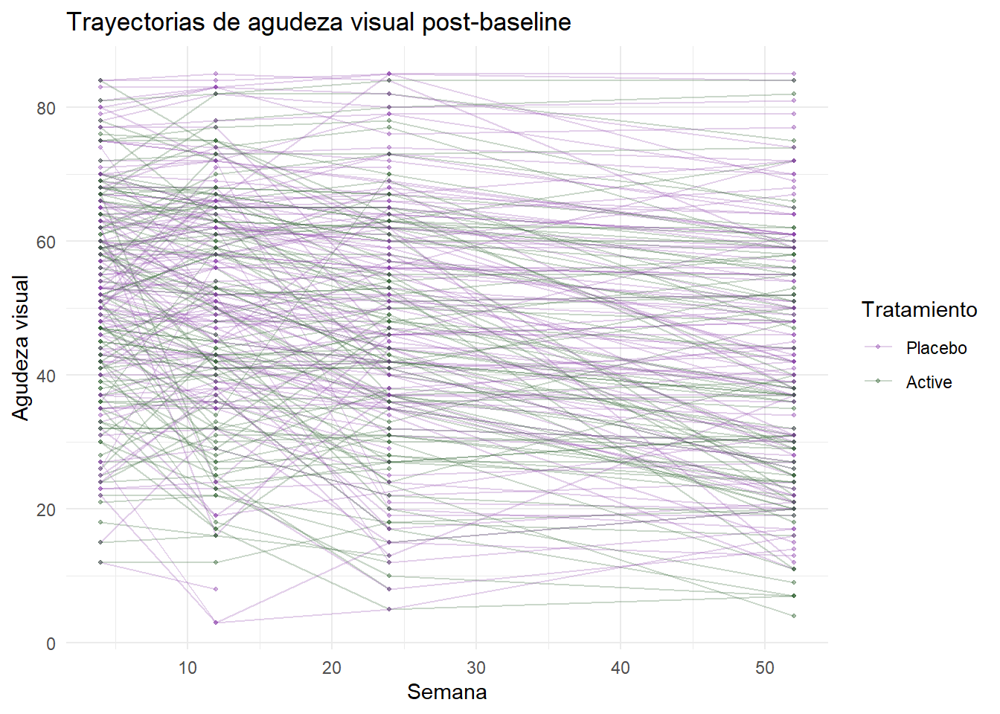
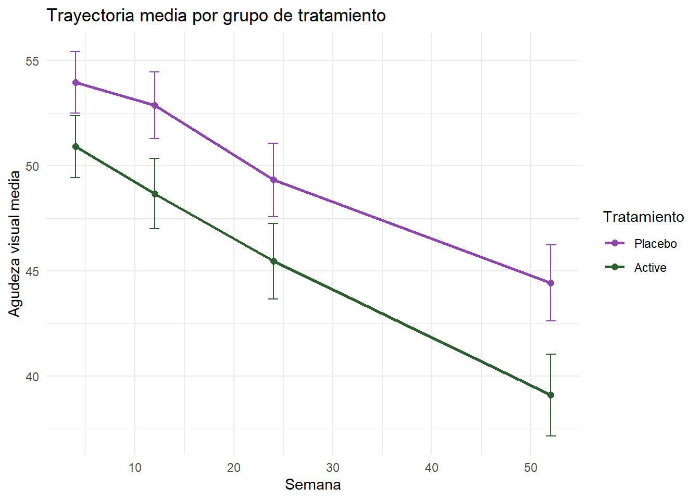
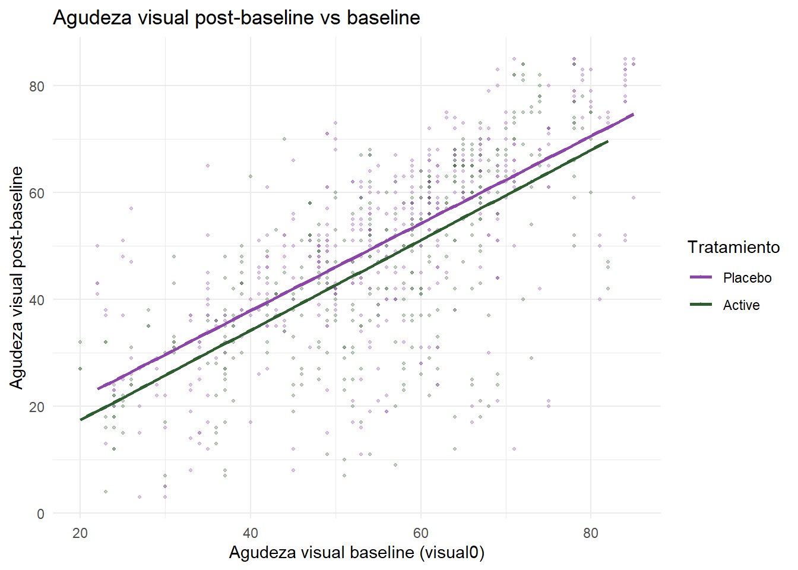

flowchart LR
A[Semana 0\nBaseline] --> B[Semana 4]
B --> C[Semana 12]
C --> D[Semana 24]
D --> E[Semana 52]
A -->|visual0 como covariable| F[Modelo mixto]
B --> F
C --> F
D --> F
E --> F
Modelo longitudinal con observaciones agrupadas (Longitudinal Grouped Data)
The ARMD Trial👁️ - Galecki & Burzykowski, Cap. 2 (p. 11-22)
1 👁Objetivo del ARMD Trial
El Age-Related Macular Degeneration (ARMD) Trial es un ensayo clínico aleatorizado que evalúa el efecto de un tratamiento sobre la agudeza visual en pacientes con degeneración macular relacionada con la edad.
Objetivo de este capítulo: Galecki usa el ARMD Trial para mostrar cómo preparar correctamente datos longitudinales para modelos mixtos — pasando de formato ancho a formato largo y conservando la medición basal como covariable.
2 👁Diseño longitudinal
- 240 pacientes asignados aleatoriamente a tratamiento activo o placebo
- Agudeza visual medida al baseline (semana 0) y a las semanas 4, 12, 24 y 52
- El outcome longitudinal es la agudeza visual post-baseline
- La medición basal (
visual0) se conserva como covariable fija en el tiempo
3 👁Formato wide procesado: armd.wide
Mostrar código
dim(armd.wide)[1] 240 10Mostrar código
names(armd.wide) [1] "subject" "lesion" "line0" "visual0" "visual4" "visual12"
[7] "visual24" "visual52" "treat.f" "miss.pat"Mostrar código
head(armd.wide) subject lesion line0 visual0 visual4 visual12 visual24 visual52 treat.f
1 1 3 12 59 55 45 NA NA Active
2 2 1 13 65 70 65 65 55 Active
3 3 4 8 40 40 37 17 NA Placebo
4 4 2 13 67 64 64 64 68 Placebo
5 5 1 14 70 NA NA NA NA Active
6 6 3 12 59 53 52 53 42 Active
miss.pat
1 --XX
2 ----
3 ---X
4 ----
5 XXXX
6 ----4 👁Estructura del formato wide
Mostrar código
str(armd.wide)'data.frame': 240 obs. of 10 variables:
$ subject : Factor w/ 240 levels "1","2","3","4",..: 1 2 3 4 5 6 7 8 9 10 ...
$ lesion : int 3 1 4 2 1 3 1 3 2 1 ...
$ line0 : int 12 13 8 13 14 12 13 8 12 10 ...
$ visual0 : int 59 65 40 67 70 59 64 39 59 49 ...
$ visual4 : int 55 70 40 64 NA 53 68 37 58 51 ...
$ visual12: int 45 65 37 64 NA 52 74 43 49 71 ...
$ visual24: int NA 65 17 64 NA 53 72 37 54 71 ...
$ visual52: int NA 55 NA 68 NA 42 65 37 58 NA ...
$ treat.f : Factor w/ 2 levels "Placebo","Active": 2 2 1 1 2 2 1 1 2 1 ...
$ miss.pat: Factor w/ 9 levels "----","---X",..: 4 1 2 1 9 1 1 1 1 2 ...| Variable | Tipo | Descripción |
|---|---|---|
subject |
Identificador | Paciente |
treat.f |
Factor | Tratamiento (Active/Placebo) |
visual0 |
Continua | Agudeza visual baseline |
visual4 |
Continua | Agudeza visual semana 4 |
visual12 |
Continua | Agudeza visual semana 12 |
visual24 |
Continua | Agudeza visual semana 24 |
visual52 |
Continua | Agudeza visual semana 52 |
miss.pat |
Factor | Patrón de datos faltantes |
lesion |
Continua | Tamaño de lesión baseline |
line0 |
Continua | Líneas de visión baseline |
5 👁Patrones de datos faltantes
Mostrar código
table(armd.wide$miss.pat)
---- ---X --X- --XX -XX- -XXX X--- X-XX XXXX
188 24 4 8 1 6 2 1 6 6 👁Formato long completo: armd0
Mostrar código
dim(armd0)[1] 1107 8Mostrar código
str(armd0)'data.frame': 1107 obs. of 8 variables:
$ subject : Factor w/ 240 levels "1","2","3","4",..: 1 1 1 2 2 2 2 2 3 3 ...
$ treat.f : Factor w/ 2 levels "Placebo","Active": 2 2 2 2 2 2 2 2 1 1 ...
$ visual0 : int 59 59 59 65 65 65 65 65 40 40 ...
$ miss.pat: Factor w/ 9 levels "----","---X",..: 4 4 4 1 1 1 1 1 2 2 ...
$ time.f : Ord.factor w/ 5 levels "Baseline"<"4wks"<..: 1 2 3 1 2 3 4 5 1 2 ...
$ time : num 0 4 12 0 4 12 24 52 0 4 ...
$ visual : int 59 55 45 65 70 65 65 55 40 40 ...
$ tp : num 0 1 2 0 1 2 3 4 0 1 ...Mostrar código
head(armd0, 10) subject treat.f visual0 miss.pat time.f time visual tp
1 1 Active 59 --XX Baseline 0 59 0
2 1 Active 59 --XX 4wks 4 55 1
3 1 Active 59 --XX 12wks 12 45 2
4 2 Active 65 ---- Baseline 0 65 0
5 2 Active 65 ---- 4wks 4 70 1
6 2 Active 65 ---- 12wks 12 65 2
7 2 Active 65 ---- 24wks 24 65 3
8 2 Active 65 ---- 52wks 52 55 4
9 3 Placebo 40 ---X Baseline 0 40 0
10 3 Placebo 40 ---X 4wks 4 40 1
armd0incluye la fila de baseline como observación longitudinal — útil para exploración.
7 👁Formato long para análisis: armd
Mostrar código
dim(armd)[1] 867 8Mostrar código
str(armd)'data.frame': 867 obs. of 8 variables:
$ subject : Factor w/ 234 levels "1","2","3","4",..: 1 1 2 2 2 2 3 3 3 4 ...
$ treat.f : Factor w/ 2 levels "Placebo","Active": 2 2 2 2 2 2 1 1 1 1 ...
$ visual0 : int 59 59 65 65 65 65 40 40 40 67 ...
$ miss.pat: Factor w/ 8 levels "----","---X",..: 4 4 1 1 1 1 2 2 2 1 ...
$ time.f : Ord.factor w/ 4 levels "4wks"<"12wks"<..: 1 2 1 2 3 4 1 2 3 1 ...
..- attr(*, "contrasts")= num [1:4, 1:3] -0.5222 -0.3023 0.0275 0.797 0.565 ...
.. ..- attr(*, "dimnames")=List of 2
.. .. ..$ : chr [1:4] "4wks" "12wks" "24wks" "52wks"
.. .. ..$ : chr [1:3] ".L" ".Q" ".C"
$ time : num 4 12 4 12 24 52 4 12 24 4 ...
$ visual : int 55 45 70 65 65 55 40 37 17 64 ...
$ tp : num 1 2 1 2 3 4 1 2 3 1 ...Mostrar código
head(armd, 10) subject treat.f visual0 miss.pat time.f time visual tp
2 1 Active 59 --XX 4wks 4 55 1
3 1 Active 59 --XX 12wks 12 45 2
5 2 Active 65 ---- 4wks 4 70 1
6 2 Active 65 ---- 12wks 12 65 2
7 2 Active 65 ---- 24wks 24 65 3
8 2 Active 65 ---- 52wks 52 55 4
10 3 Placebo 40 ---X 4wks 4 40 1
11 3 Placebo 40 ---X 12wks 12 37 2
12 3 Placebo 40 ---X 24wks 24 17 3
14 4 Placebo 67 ---- 4wks 4 64 1
armdexcluye las filas de baseline como respuesta longitudinal, pero conservavisual0como covariable fija en el tiempo. Este es el data frame principal para ajustar modelos mixtos.
8 👁Tabla de objetos
| Objeto | Formato | Filas | Baseline como fila | Uso |
|---|---|---|---|---|
armd.wide |
Wide | 240 | Sí | Datos procesados en formato ancho |
armd0 |
Long | 1107 | Sí | Exploración longitudinal completa |
armd |
Long | 867 | No | Data frame principal para análisis |
9 👁Variables time-fixed y time-varying
Mostrar código
# Variables fijas en el tiempo (nivel paciente)
armd |>
select(subject, treat.f, visual0, miss.pat) |>
distinct() |>
head() subject treat.f visual0 miss.pat
1 1 Active 59 --XX
2 2 Active 65 ----
3 3 Placebo 40 ---X
4 4 Placebo 67 ----
5 6 Active 59 ----
6 7 Placebo 64 ----Mostrar código
# Variables que cambian en el tiempo (nivel medición)
armd |>
select(subject, time, time.f, tp, visual) |>
head(10) subject time time.f tp visual
2 1 4 4wks 1 55
3 1 12 12wks 2 45
5 2 4 4wks 1 70
6 2 12 12wks 2 65
7 2 24 24wks 3 65
8 2 52 52wks 4 55
10 3 4 4wks 1 40
11 3 12 12wks 2 37
12 3 24 24wks 3 17
14 4 4 4wks 1 64| Variable | Nivel | Tipo | Descripción |
|---|---|---|---|
visual |
1 | Continua | Outcome — agudeza visual post-baseline |
time |
1 | Continua | Semana (4, 12, 24, 52) |
time.f |
1 | Factor | Semana como factor ordenado |
tp |
1 | Continua | Posición de la visita |
visual0 |
2 | Continua | Agudeza visual baseline |
treat.f |
2 | Factor | Tratamiento |
miss.pat |
2 | Factor | Patrón de faltantes |
subject |
2 | Identificador | Paciente |
10 👁Tiempo: time, time.f y tp
Mostrar código
table(armd$time)
4 12 24 52
231 227 214 195 Mostrar código
table(armd$time.f)
4wks 12wks 24wks 52wks
231 227 214 195 Mostrar código
summary(armd$tp) Min. 1st Qu. Median Mean 3rd Qu. Max.
1.00 1.00 2.00 2.43 3.00 4.00
time— semana como número continuotime.f— semana como factor ordenadotp— posición numérica de la visita- Los contrastes polinómicos se asignan a
time.fmediantecontr.poly()
11 👁Contrastes polinómicos para time.f
Galecki asigna contrastes polinómicos ortogonales a time.f para que el tiempo como factor pueda representar tendencias lineales, cuadráticas y de orden superior entre las visitas post-baseline.
Mostrar código
contrasts(armd$time.f) .L .Q .C
4wks -0.52216722 0.5650459 -0.39757328
12wks -0.30230734 -0.1623336 0.79514657
24wks 0.02748249 -0.7367449 -0.45436947
52wks 0.79699208 0.3340327 0.05679618Estos contrastes no cambian los datos observados — modifican la forma en que R codifica el factor
time.fcuando se usa en modelos posteriores.
12 👁Exploración descriptiva


`geom_smooth()` using formula = 'y ~ x'
13 👁Base lista para modelos mixtos
Mostrar código
armd |>
group_by(treat.f) |>
summarise(
pacientes = n_distinct(subject),
mediciones = n(),
visual_med = round(mean(visual, na.rm = TRUE), 2),
visual_de = round(sd(visual, na.rm = TRUE), 2)) |>
knitr::kable(caption = "Resumen por grupo de tratamiento")| treat.f | pacientes | mediciones | visual_med | visual_de |
|---|---|---|---|---|
| Placebo | 118 | 451 | 50.31 | 17.86 |
| Active | 116 | 416 | 46.43 | 17.87 |
14 👁Conclusiones
- El ARMD Trial tiene estructura longitudinal: las mediciones repetidas están agrupadas dentro de pacientes
- La preparación correcta requiere pasar de formato wide a long y separar baseline del outcome
visual0se conserva como covariable fija — no como fila del outcome longitudinal- El data frame
armdestá listo para ajustar modelos mixtos en capítulos posteriores
Galecki usa el ARMD Trial para mostrar cómo pasar de datos crudos en formato ancho a un data frame longitudinal listo para modelos mixtos, conservando la medición basal como covariable y modelando solo las mediciones post-baseline como respuesta longitudinal.